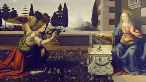
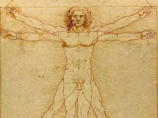

Творби

1.

2.

3.

4.
Леонардо Да Винчи
1452г. - 1519г.
Леонардо да Винчи е знаменит италиански архитект, изобретател, инженер, скулптор и художник от епохата на Ренесанса.Леонардо да Винчи е роден на 15 април 1452 г. в град Винчи, тогава владение на Флоренция. За него се казва, че е първообраз на ренесансовия човек и всеобхватен гений. Леонардо е прочут заради картините си, най-известните от които са „Тайната вечеря“ и „Мона Лиза“. Той е известен и с многобройните си изобретения, изпреварили времето си, но останали само на хартия. Допринася също така за развитието на анатомията, астрономията и инженерството. Общата продукция на Леонардо да Винчи в живописта е наистина доста малка; има по-малко от 20 оцелели картини, които определено могат да му бъдат приписани, а няколко от тях са недовършени. Две от най-важните му творби - Битката при Ангиари и Водя , нито един от тях не е завършен - са оцелели само в копия.